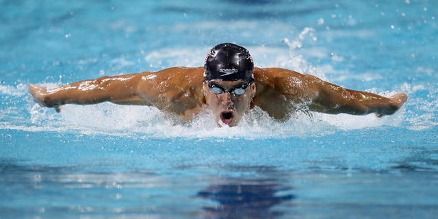

Hola, soy Andrés, estudiante de séptimo semestre. Si te interesa colaborar en algún proyecto o trabajar juntos, puedes contactarme a través de cualquiera de mis medios disponibles.
ESCOM (IPN) 2022-Actualidad
Carrera: Sistemas Computacionales
CECYT 1 (IPN) 2019-2022
Carrera: Técnico en Sistemas Digitales

Mi principal pasatiempo es la natación, desde que abrieron la alberca olímpica en Zacatenco he estado asistiendo a clases 3 días a la semana. Me parece que es un deporte que relaja demasiado el cuerpo.
Otro de mis pasatiempos es hacer ejercicio en mi casa. Por lo regular suelo hacer entre 30 y 45 minutos de ejercicio al día.
El pasatiempo al que más le dedico tiempo es la música, aunque he aprendido algunas cosas por mi cuenta, me gusta ver videos acerca del tema para seguir aprendiendo más.
Phil Zimmermann es un criptógrafo e ingeniero de software estadounidense reconocido mundialmente por ser el creador de Pretty Good Privacy (PGP), uno de los sistemas de cifrado más influyentes en la historia de la seguridad digital. Nació en 1954 en Estados Unidos y desde finales de los años 80 mostró una profunda preocupación por la privacidad, la vigilancia gubernamental y el derecho de las personas a comunicarse de forma segura.
La publicación de PGP generó una investigación federal en su contra por presunta violación de leyes de exportación de criptografía. Sin embargo, el caso fue finalmente cerrado sin cargos, y el episodio convirtió a Zimmermann en un símbolo del movimiento por la privacidad digital.